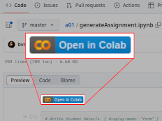
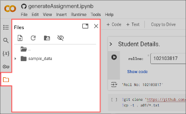
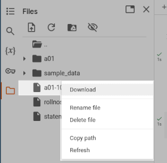

UTA027: Artificial Intelligence
TIET Patiala
A01: Predicate Calculus
Instructors:
- Raghav B. Venkataramaiyer (
bv.raghav) - Stuti Chug (
stuti.chug)
Task
This exercise requires a student to translate situations (decision logic) described in natural english language to be translated to predicate calculus. Here are a few examples. There are a total of 75 instances for each student. The submission is in the form of a git repository the commit access to which shall be rescinded after the deadline.
Important Dates
| S.No. | Desc | Timestamp |
|---|---|---|
| 1. | Submission Starts | 07-01-2025 0800 IST |
| 2. | Submission Ends | 20-01-2025 0500 IST |
Getting started
This assignment should already be available on your userspace as a git repository. Navigate to the git repository in your userspace;
- Navigate to
generateAssignment.ipynb, (in your userspace). - Click “Open in Colab.”
 - Upon opening in Colab; the runtime should connect
all by itself and the files pane should be
populated. Click on folder/ files icon to view.
 - Fill you
rollnoin the widget; andCtrl+F9(or else, via Menu ⧽ Runtime ⧽ Run all). This should result in a CSV file nameda01-<YOUR_ROLL_NO>.csvin the files pane. Click on three-dots to download it.
 - Edit the csv with your favourite spreadsheet editor (Google Sheets, MS Excel, LibreOffice, VIm, Emacs or otherwise) to fill in your answers.
- Save or download the file as CSV, and commit back into your repository.
- A submission may be updated multiple times before the deadline. So, one may save the progress online. By default a student assignment is a private repo; so unless exposed intentionally by the student, your submission is secure.
Some Tricks
In your lab session, your instructor may be able to guide to use save some time by:
- Getting started with the Github Classrooms;
- Save the file to google drive directly instead of downloading;
- Editing within Github Codespace itself;
- Using automated string substitution(s), e.g.
FA X tomorrow?(X) AND rains?(X) IMPL bring?(me,umbrella)
instead of
∀ X tomorrow?(X) ∧ rains?(X) → bring?(me,umbrella)
and this translation is done automatically.
Examples
A situation description in natural language, may be expressed formally using predicate logic. The following ten cases serve as exemplars.
If it rains tomorrow, I'll bring an umbrella.
∀ X tomorrow?(X) ∧ rains?(X) → bring?(me,umbrella)
Here, X is a variable chosen for day, and we know
that there are two predicates for the day, that
define it; namely its tomorrow?, and it rains?
on the day. This forms our premise (or antecedent).
The consequent is that I (represented by a constant
me because i might be too generic) would bear an
umbrella.
If you heat water to 100°C, it boils.
∀ T geq?(temp(water, T),100) → boils?(water,T)
From our understanding of the world, heating of
water is a process, which bears its signature as
water temperature. Hence the author chose a
function temp to extract the substance property at
time T. Function Expression temp(water,T)
represents that water temperature is being measured,
probably periodically through some sensor. geq?
is a predicate defined for comparison, and returns
“truthy” if the first argument is greater than or
equal to the second. boils? is a (predicate)
property that will be visible on water at time T
as a consequence.
If I had more time, I would learn to play piano.
∀ X greater?(free_time(me),X) → learning_piano?(me)
More time is a relative concept; hence the reference
point here is taken as a variable X, to define the
premise. And the nomenclature learning_piano? for
the predicate has been designed to reflect continuity.
Please note here that in the formulation here the english grammatical tense makes no difference, e.g. “If I am having more time, I am learning piano” might be poor, perhaps incorrect, english but that’s the rough meaning of this well-formed expression (WFE) in predicate calculus (PC).
If she arrives early, we can start the meeting sooner.
∀ X less?(arr_time(she),X) → less?(start_time(meeting),X)
Again here, understanding the world of discourse would help frame a (WFE-PC)
Time is taken as variable and subtly embedded as “return value” of a “function”.
If you mix blue and yellow, you get green.
∀ X blue?(X) ∧ ∀ Y yellow?(Y) → green?(mix(X,Y))
X and Y have been chosen as variable colours,
because blue (or yellow or green) is not just one
colour, they are a range of colours. eg. both sky
and sea are blue, but not same. And if you mix
either of them with a yellow, you get a green.
If I were you, I'd take that job offer.
as_if?(me,you) → ∀ X (job_offer?(X) ∧
accept?(me,X))
If the store is open, could you buy some milk?
open?(store) → ∀ X may_buy_from?(you,store,milk)
The question like “could you…?” is implicit in all of PC, because the expression evaluates to true only if certain conditions are met. So, in PC, this english sentence is equivalent to saying “If the store is open, by me some milk.”
If my dog hears a noise, he always barks.
∀ X noise?(X) ∧ ∀ Y my_dog?(Y) ∧ hears?(X,Y) →
barks?(Y)
or,
∀ X noise?(X) ∧ ∀ Y dog?(Y) ∧ pet?(me, Y) ∧
hears?(X,Y) → barks?(Y)
Please note the equivalence here: my_dog?(Y) ≡
dog?(Y) ∧ pet?(me, Y)
If we leave now, we'll catch the train.
eq?(dep_time(us),now()) → catch?(us,train)
or,
∀T now?(T) ∧ eq?(dep_time(us),T) → catch?(us,train)
now() has essentially been represented, more
formally in the latter version, as a “unary
function” because it’s value changes depending upon
the time of invocation.
If you need help, just ask me.
need?(you,help) → ask?(you,me,help)